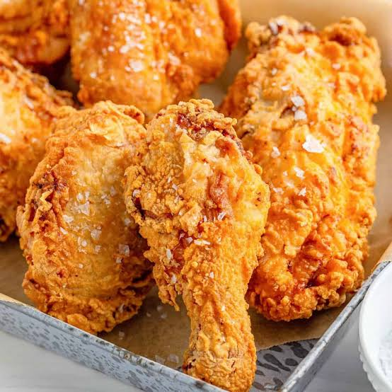

Southern Fried Chicken

What is Southern Fried Chicken?
Southern fried chicken, is a dish consisting of chicken pieces, coated with seasoned flour or batter, that are pan-fried, deep-fried, pressure-fried, or air-fried.
Ingredients
- 1 cup all-purpose flour
- 2 teaspoons paprika
- 1 teaspoon salt
- 1 teaspoon ground black pepper
- 1 teaspoon garlic powder
- 1 teaspoon onion powder
- 1/2 teaspoon cayenne pepper (Optional)
- 1 whole chicken, cut into pieces
- vegetable oil for frying
Steps to cook:
- Combine flour, paprika, salt, black pepper, garlic powder, onion powder, and cayenne in a large resealable plastic bag. Add chicken pieces to the bag; toss to coat.
- Place floured chicken pieces on a wire rack set over a baking sheet; reserve remaining flour in the bag. Refrigerate chicken until flour looks pasty, about 45 minutes.
- Meanwhile, heat 1 79cm oil in a deep fryer 190 degrees C.
- Place chicken pieces back into the reserved bag of flour; toss to coat. This will help the coating cling nicely to the chicken pieces for crispier results. Preheat the oven to 93 degrees C.
- Lower chicken pieces, 2 to 3 pieces at a time, carefully into the hot oil. Fry until golden, flipping once, 8 to 12 minutes. An instant-read thermometer inserted near but not touching bones should read 74 degrees C.
- Transfer to a paper towel-lined plate to drain. Keep fried chicken warm in the preheated oven while frying remaining chicken.
- Enjoy!
Home